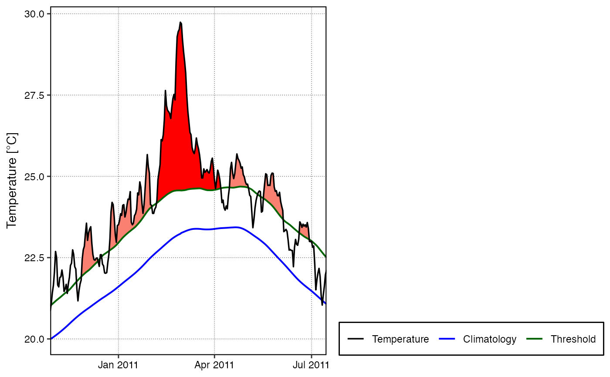

Creates a graph of warm or cold events as per the second row of Figure 3 in Hobday et al. (2016).
event_line(
data,
x = t,
y = temp,
metric = intensity_cumulative,
min_duration = 5,
spread = 150,
start_date = NULL,
end_date = NULL,
category = FALSE,
x_axis_title = NULL,
x_axis_text_angle = NULL,
y_axis_title = NULL,
y_axis_range = NULL,
line_colours = NULL
)The function receives the full (list) output from the
detect_event function.
This column is expected to contain a vector of dates as per the
specification of make_whole_fast. If a column headed t is present in
the dataframe, this argument may be omitted; otherwise, specify the name of
the column with dates here.
This is a column containing the measurement variable. If the column
name differs from the default (i.e. temp), specify the name here.
This tells the function how to choose the event that should be
highlighted as the 'greatest' of the events in the chosen period.
Partial name matching is currently not supported so please specify the metric
name precisely. The default is intensity_cumulative.
The minimum duration (days) the event must be for it to qualify as a heatwave or cold-spell.
The number of days leading and trailing the largest event
(as per metric) detected within the time period specified by
start_date and end_date. The default is 150 days.
The start date of a period of time within which the largest
event (as per metric) is retrieved and plotted. This may not necessarily
correspond to the biggest event of the specified metric within the entire
time series. To plot the largest event within the whole time series, make sure
start_date and end_date straddle this event, or simply leave them both
as NULL (default) and event_line will use the entire time series date range.
The end date of a period of time within which the largest
event (as per metric) is retrieved and plotted. See start_date
for additional information.
A boolean choice of TRUE or FALSE. If set to FALSE (default) event_line() will
produce a figure as per the second row of Figure 3 in Hobday et al. (2016). If set to TRUE a
figure showing the different categories of the MHWs in the chosen period, highlighted as
seen in Figure 3 of Hobday et al. (in review), will be produced. If category = TRUE,
metric will be ignored as a different colouring scheme is used.
If one would like to add a title for the x-axis it may be provided here.
If one would like to change the angle of the x-axis text, provide the angle here as a single numeric value.
Provide text here if one would like a title for the y-axis other than "Temperature °C" (default)
If one would like to control the y-axis range, provide the desired limits here as two numeric values (e.g. c(20, 30)).
Provide a vector of colours here for the line geoms on the plot.
The default for the base plot is c("black", "blue", "darkgreen"), and for categories
it is: c("black", "gray20", "darkgreen", "darkgreen", "darkgreen", "darkgreen"). Note that
three (category = FALSE) or six (category = TRUE) colours must be provided,
with any colours in excess of the requirement being ignored.
The function will return a line plot indicating the climatology,
threshold and temperature, with the hot or cold events that meet the
specifications of Hobday et al. (2016) shaded in as appropriate. The plotting
of hot or cold events depends on which option is specified in detect_event.
The top event detect during the selected time period will be visible in a
brighter colour. This function differs in use from geom_flame
in that it creates a stand alone figure. The benefit of this being that one must not have any prior knowledge of ggplot2 to create the figure.
Hobday, A.J. et al. (2016), A hierarchical approach to defining marine heatwaves, Progress in Oceanography, 141, pp. 227-238, doi: 10.1016/j.pocean.2015.12.014
ts <- ts2clm(sst_WA, climatologyPeriod = c("1983-01-01", "2012-12-31"))
res <- detect_event(ts)
event_line(res, spread = 100, metric = duration,
start_date = "2010-12-01", end_date = "2011-06-30")

event_line(res, spread = 100, start_date = "2010-12-01",
end_date = "2011-06-30", category = TRUE)
event_line(res, spread = 100, start_date = "2010-12-01",
end_date = "2011-06-30", category = TRUE,
line_colours = c("black", "blue", "gray20", "gray20", "gray20", "gray20"))